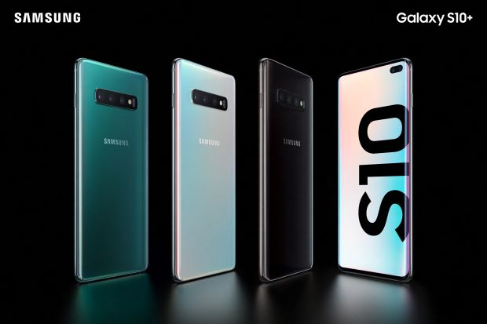
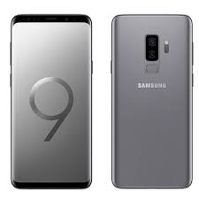

Home About Contact
FaceBook
Galaxy Fold

Galaxy S10
Galaxy Note 9
The main highlight of the Galaxy Fold is that it has two displays — one on the outside and another that's revealed when you open the phone up.
The outer display is a 4.6-inch HD+ Super AMOLED panel with a 21:9 aspect ratio. The inner/main display of the Galaxy Fold is a large 7.3-inch QXGA+ Dyanic AMOLED canvas with a form factor of 4.2:3.Its power button contains a fingerprint reader. Samsung did not state which system-on-chip it uses in the Galaxy Fold, beyond that it is a "state-of-the-art" CPU with a 7 nanometer production process, contains 12 GB of RAM, and has 512 GB of non-expandable storage.
But due to some problem its release got delayed for some reason.We hope it gets back as soon as possible. Some problems in it was found so samsung cancelled the release of fold.
The standard S10 improves on 2018’s S9 with a third, wide-angle camera sensor on the rear, slimmer bezels with a camera cutout, a bigger battery, and of course the new 2019 Snapdragon 855 SoC or Exynos 9820 at a vastly increased price over its predecessor.
The S10 Plus is an S10 with a bigger screen, battery, and price, just like the S9 Plus, though unlike its predecessor it does not feature any more RAM or cameras than its smaller sibling.
The S10e fills a new product segment for Samsung as the step-down from their top-tier S-flagships by losing the rear ‘telephoto’ camera sensor, a lower resolution 1080p+ screen, and a lesser fingerprint scanner in a flat, slightly cheaper body whilst still being slightly more expensive than last year’s S9, just like Apple’s iPhone XR.
The S10e starts at $750, the S10 starts at $900, and the S10 Plus starts at the always excessive $1000 price mark and preorders for all three are available.
The Samsung Galaxy Note 9 is a little bigger, a little more colorful, and a little more powerful than all prior Note phones, but be warned: it’s a little more expensive, too.
It is a sizeable 6.4-inch Super AMOLED display, a huge 4,000mAh battery for all-day performance, and up to 512GB of internal storage and 8GB of RAM. Sure, that's been rivaled and even a bit exceeded by the Samsung Galaxy S10 Plus, but the Note 9 is still a mighty contender going into 2019.Good news – the Note 9 doesn’t actually feel any bigger than the 6.3-inch Note 8, and it inherits a bunch of features from the 5.8-inch Galaxy S9 and 6.2-inch Galaxy S9 Plus, including camera specs.
The camera here is noticeably better than the Note 8, with a dual 12MP rear setup that has dual-aperture technology, and can record Super Slow Mo videos. There are stereo speakers, and the less-than-impressive AR Emoji mode is back with some finer avatar customizations. Rest assured, AR Emoji will still look nothing like you.

S9/S9plus
Features
The Samsung Galaxy S9+ is here with the camera re-imagined! Take professional quality photos with the dual aperture, dual 12MP rear facing cameras, and capture stunning pictures whether you’re in bright daylight, moonlight, or super low light. Slow down reality in Super Slow-Mo mode that allows you to record 960 frames per second so you can see every detail.
6.2 inch QHD Super AMOLED Display
Dual 12MP Rear Facing Camera
8MP Front Facing Camera
Dual Aperture
Super Slow Motion Video Capture
AR Emoji
Dolby Atmos Stereo Speakers
Water & Dust Resistant
Intelligent Scan
Bixby Live Translate
4K Video Capture
6 GB RAM Internal Memory, 64 GB ROM Storage
Expandable Memory up to 400 GB
Long Lasting 3500 mAh Battery
Fast Wireless Charging
Android™ 8.0
Bluetooth 5.0
Qualcomm® Snapdragon™ 845 Processor
Android Pay
Samsung Pay
Copyright© 2019 Harsh Kumar Gupta
All Rights Reserved.